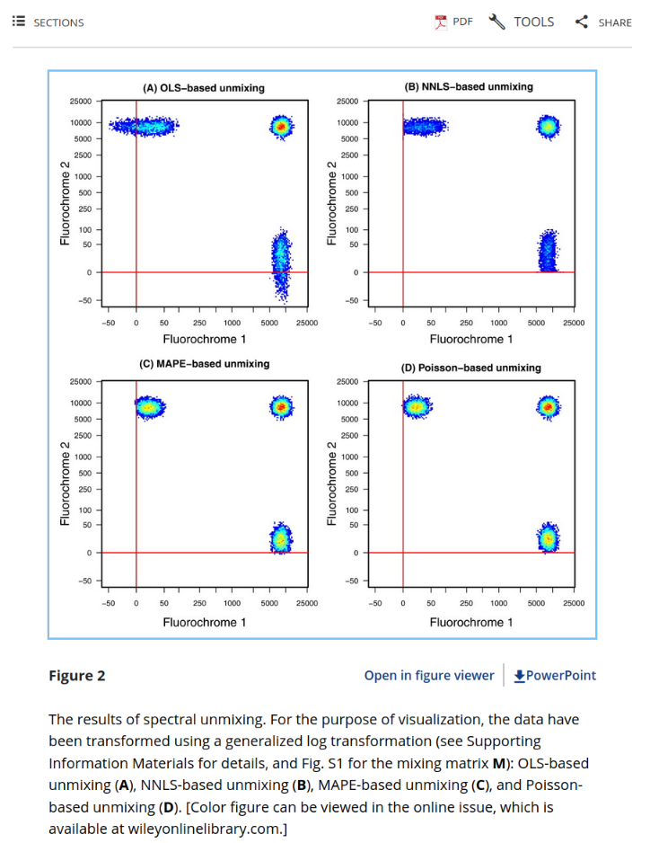

![]()
Rapid tested positive for SARS-CoV-2 earlier this week so have been out-of-comission lab-wise. Now that the fever has retreated and needing a break from dissertation writing, taking some time this evening to document some of the more-interesting rabbit-holes from the last couple months.
For context, my thesis lab first switched to using the spectral flow cytometry back in 2020 when a 6-month backlog of clinical COVID specimens monopolized the mass cytometers on campus disrupting the original plans for specimen processing. Looking back, those first few months were wild, as we attempted to treat the experiments like simply larger conventional experiments (by taking three hours to manually compensate each fcs file… shudder). It wasn’t until after encountering Laura Johnston tutorial videos on the University of Chicago Flow’s Youtube channel in early 2021 that our unmixing control practices changed and the data resolution (and reproducibiltiy) improved dramatically.
In terms of my descent into spectral flow cytometry madness, my first independent experiment on the 4L Cytek Aurora was in August 2021. It was probably in early 2022 when I first encountered this 2013 paper from David Novo, Gerald Gregori and Bartek Rajwa. In it, they both simulated data and used data from an early spectral flow cytometer to compare different methods of unmixing.
One of the figures that always stood out to me was Figure 2:

I was fascinated by the differences in spreading for the different unmixing methods and was curious to test on my own samples. Unfortunately, that was beyond my ability at the time. I read curiously at the methods description, having only recently managed to get a PCA plot and MANOVA to output correctly in R.
It wasn’t until early 2023 that I encountered Christopher Hall’s flowUnmix package that attempted to provide some unmixing options for the mentioned unmixing methods. I managed to get every one to work for my samples, but the non-negative least squares (NNLS) failed for all but the most downsampled .fcs file due to being so slow to run.
Fast forward a couple years (and a lot more coding in R) I circled back to this problem. The nnls function comes from the nnls R package, taking two arguments, 1) a matrix of unmixing control signatures, and the raw sample values iterated over in a row-fashion.
Like everyone else on Twitter these last two years on the Bioinformatics side, we all know someone who has been proselytizing the gospel of Rust (Josiah Parry and Rob Patro in the case of my feed). Similar to how the RCPP and cpp11 R packages can be used to connect C++ functions within an R package, extendr does something similar for Rust.
So I decided this would be a good target example.
After some effort, it worked!
When I run OLS, the test-data completes in around 0.015 seconds (there’s a reason it is used for live unmixing). By comparison, the nnls package’s nnls (running Fortran77 in the background) takes 0.144 seconds (approximate 9x as long). My first attempt in Rust using the nnls crate took 0.075, so some improvement. However, I was still iterating in R and passing individual vectors to rust. Would it be faster if I iterated over the sample matrix within Rust? I proceeded to modify, and sure enough, completes at 0.047 seconds.
So in the end, I managed to get nnls from taking 9x as long as OLS to 3x with an initial attempt with only introductory rust knowledge. Not bad for now, but room to improve going forward.
However, looking at it, I realized my mental image of NNLS from the Novo et al. 2013 paper was inverted, I had actually been thinking of the WLS/Poisson-regression unmixing approaches. Implementing those approaches into my code-base will need to wait for another day (and hopefully not involve hand-coding my own Rust crate :D ).